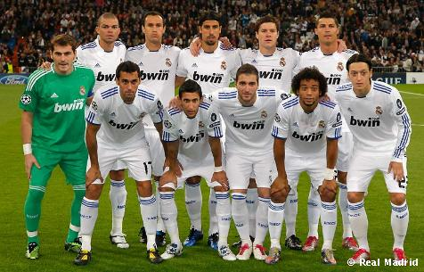

Історія клубу
 У 1896 році був створений клуб «Футбол Скай», що став прабатьком мадридського клубу. Але офіційною датою заснування вважається 6 березня 1902 року, коли брати Падрос і Хуліан Паласіос відкривають клуб під назвою Madrid Football Club. 29 червня 1920 король Іспанії Альфонс XIII присвоїв клубу титул Королівський, що по-іспанськи звучить як Real. Звідси сучасна назва клубу - Real Madrid.
У 1896 році був створений клуб «Футбол Скай», що став прабатьком мадридського клубу. Але офіційною датою заснування вважається 6 березня 1902 року, коли брати Падрос і Хуліан Паласіос відкривають клуб під назвою Madrid Football Club. 29 червня 1920 король Іспанії Альфонс XIII присвоїв клубу титул Королівський, що по-іспанськи звучить як Real. Звідси сучасна назва клубу - Real Madrid.З моменту заснування клуб став претендувати на лідерство в іспанському футболі: вже в 1903 році він вийшов у фінал Кубка країни, де поступився «Атлетіко» з Більбао. Через кілька років почесний трофей надовго «переїхав» до столиці: «Мадрид» завойовував Кубок Іспанії чотири рази поспіль. Чемпіонати Іспанії стали проводитися тільки з сезону 1928/29, а до того клуби визначали найсильніших по регіонах. «Мадрид» (з 1920 року - «Реал Мадрид») за цей час мав першість в столичному окрузі 16 разів.
Розквіт
До середини 50-х років минулого століття, коли в Європі вирішили створити континентальну федерацію футболу, яке налагодило б регулярне проведення змагань як клубних, так і національних команд, мадридський «Реал» не був головним авторитетом в Іспанії. Однак саме «Реал» виграв першість 1954/55, завдяки чому став першим іспанським делегатом в Кубку європейських чемпіонів. З того моменту «Реал» утвердився на європейській вершині на п'ять років. Успіхам на міжнародній арені супроводжували і перемоги у внутрішньому чемпіонаті, яких в період з 1954 по 1969 рік було 12. Протягом півтора десятка років виходило так, що якщо мадридці і поступалися вдома першість, то обов'язково вигравали Кубок чемпіонів. Таким чином, вони постійно брали участь в найпрестижнішому європейському турнірі впродовж 15 років поспіль, вперше не потрапивши в нього лише в 1970 році. В ту золоту епоху в «Реалі» сяяли натуралізований аргентинець Альфредо Ді Стефано (кращий футболіст Європи 1957 і 1959 років), француз Раймон Копа (володар «Золотого м'яча» 1958 року), угорець Ференц Пушкаш (другий футболіст Европи 1960 роки), Франсиско Хенто - шестиразовий володар Кубка чемпіонів. В середині 60-х компанію «довгожителеві» Хенто становили Хосе Сантамарія, Амансіо, Піррі, Мігель Анхель.{kind=link}
Поступово, у міру відходу ветеранів, переможні традиції в Європі було втрачено. Наступного зльоту довелося чекати майже двадцять років, коли прийшло нове покоління на чолі з Еміліо Бутрагеньо, найближчими сподвижниками якого були Мічел, Уго Санчес,Маноло Санчіс, Мартін Васкес і Мігель Пардесія. Вони виграли два Кубки УЄФА і п'ять чемпіонатів поспіль.
1970-і – 1990-і роки
 В середині сімдесятих «Реал» зазначив розгромну перемогу над «Барселоною» (4:0) у фіналі Кубка Іспанії сезону 1973/1974. У 1978 році «Реал» придбав Улі Штіліке і Хуаніто, які, незважаючи на несхожість ігровий манери, на довгі роки стануть ідолами мадридських уболівальників. 4 червня 1980 року мадридці перемогли в фіналі Кубка країни, розгромивши «Кастілья» 6:1. На наступний рік «Реал» знову нагадав про себе Європі, вийшовши у фінал Кубка європейських чемпіонів. Однак в лютій сутичці з «Ліверпулем» мадридці, керовані Вуядіном Бошковим, змушені були поступитися з рахунком 0:1. У грудні 1983 року тренером «Реала» став Альфредо ді Стефано, а команду поповнили Мартін Ескер, Мічел, Санчіс і Еміліо Бутрагеньо, який зовсім скоро став одним з символів команди. Уже в першій грі за «королівський» клуб Бутрагеньо відзначився двічі і приніс перемогу мадридцям в матчі проти «Кадіса».
В середині сімдесятих «Реал» зазначив розгромну перемогу над «Барселоною» (4:0) у фіналі Кубка Іспанії сезону 1973/1974. У 1978 році «Реал» придбав Улі Штіліке і Хуаніто, які, незважаючи на несхожість ігровий манери, на довгі роки стануть ідолами мадридських уболівальників. 4 червня 1980 року мадридці перемогли в фіналі Кубка країни, розгромивши «Кастілья» 6:1. На наступний рік «Реал» знову нагадав про себе Європі, вийшовши у фінал Кубка європейських чемпіонів. Однак в лютій сутичці з «Ліверпулем» мадридці, керовані Вуядіном Бошковим, змушені були поступитися з рахунком 0:1. У грудні 1983 року тренером «Реала» став Альфредо ді Стефано, а команду поповнили Мартін Ескер, Мічел, Санчіс і Еміліо Бутрагеньо, який зовсім скоро став одним з символів команди. Уже в першій грі за «королівський» клуб Бутрагеньо відзначився двічі і приніс перемогу мадридцям в матчі проти «Кадіса». 24 травня 1985 року посаду президента зайняв Рамон Мендоса, чиє правління буде відзначено видатними досягненнями. У 1985 і 1986 роках мадридці завойовували Кубок УЄФА, обігравши в фінальних матчах «Відеотон» і «Кельн». На своєму полі «Реал» виступав особливо натхненно: здавалося, його гравцям під силу відігратися з будь-якого рахунку. Одного разу їм вдалося зробити і зовсім щось неймовірне: програвши менхенгладбахської «Боруссії» з рахунком 1:5, мадридці провели на «Сантьяго Бернабеу» чотири м'ячі і вийшли в наступний раунд. Після кількох щодо невдалих сезонів пост головного тренера «Реала» зайняв Хорхе Вальдано, до цього плідно попрацював в «Тенеріфе». Наставник довірив місце в основному складі Редондо, Лаудрупу, Амавіска, Кіке Флорес.
24 травня 1985 року посаду президента зайняв Рамон Мендоса, чиє правління буде відзначено видатними досягненнями. У 1985 і 1986 роках мадридці завойовували Кубок УЄФА, обігравши в фінальних матчах «Відеотон» і «Кельн». На своєму полі «Реал» виступав особливо натхненно: здавалося, його гравцям під силу відігратися з будь-якого рахунку. Одного разу їм вдалося зробити і зовсім щось неймовірне: програвши менхенгладбахської «Боруссії» з рахунком 1:5, мадридці провели на «Сантьяго Бернабеу» чотири м'ячі і вийшли в наступний раунд. Після кількох щодо невдалих сезонів пост головного тренера «Реала» зайняв Хорхе Вальдано, до цього плідно попрацював в «Тенеріфе». Наставник довірив місце в основному складі Редондо, Лаудрупу, Амавіска, Кіке Флорес.") 8 січня 1995 роки команда Вальдано знищила своїх головних суперників з «Барселони», перемігши в матчі чемпіонату з рахунком 5:0, а згодом завоювала чемпіонський титул. Однак наступний сезон «Реал» провалив, і місце на тренерському містку в липні 1996 року зайняв знаменитий італієць Фабіо Капелло. Помітно оновився і склад команди, в яку влилися Зеєдорф, Міятович і Роберто Карлос. Для перемоги в чемпіонаті команді Капелло вистачило одного сезону. У травні 1998 року «Реал» в сьомий раз завойовує Кубок чемпіонів, перемігши у вирішальному матчі «Ювентус» (1:0), а через кілька місяців виграє і Міжконтинентальний кубок у «Васко да Гами».
8 січня 1995 роки команда Вальдано знищила своїх головних суперників з «Барселони», перемігши в матчі чемпіонату з рахунком 5:0, а згодом завоювала чемпіонський титул. Однак наступний сезон «Реал» провалив, і місце на тренерському містку в липні 1996 року зайняв знаменитий італієць Фабіо Капелло. Помітно оновився і склад команди, в яку влилися Зеєдорф, Міятович і Роберто Карлос. Для перемоги в чемпіонаті команді Капелло вистачило одного сезону. У травні 1998 року «Реал» в сьомий раз завойовує Кубок чемпіонів, перемігши у вирішальному матчі «Ювентус» (1:0), а через кілька місяців виграє і Міжконтинентальний кубок у «Васко да Гами».Після невдалого сезону 1998/1999 керівництво «Реала» вирішило довірити пост головного тренера Вісенте дель Боске і не прогадало: клуб увосьме здобув Кубок чемпіонів, обігравши «Валенсію» (3:0) у фінальному матчі. Відмінно проявив себе Рауль, який став справжнім лідером команди. У 2001 році «Реал» в 28-й раз завоював титул чемпіона країни.
Президенство Переса
Новим президентом був обраний амбітний Флорентіно Перес, який вирішив зібрати в «Реалі» всіх кращих футболістів планети. Свою діяльність Перес почав з покупки португальця Луїша Фігу у «Барселони» за рекордні 71 млн євро. Через рік до лав «Реала» влився Зінедін Зідан, за якого заплатили «Ювентусу» ще більше - 75 мільйонів. Ще через рік з «Інтера» прибув Роналдо, влітку 2003 року - Бекхем, в 2004 - Оуен. Таким чином, в сезоні 2004/05 разом грали чотири футболісти, удостоюється «Золотого м'яча»: Роналдо (кращий футболіст світу 1997 і 2002 років), Зідан (1998), Фігу (2000), Оуен (2001). Це зібрання зірок стали називати «Галактікос». За п'ять з гаком років правління Переса (він склав повноваження в лютому 2006 року) «Реал» двічі ставав чемпіоном Іспанії і лише раз виграв Лігу чемпіонів УЄФА (в сезоні 2001/2002).{kind=link}
{kind=link}
Президенство Кальдерона
Після Флорентіно Переса президентом Реала був обраний Рамон Кальдерон, стиль керівництва якого відрізнявся від стилю попередника. Кальдерон не ставив собі за мету покупку кращих гравців, хоча його передвиборною обіцянкою була покупка Кріштіану Роналду і Кака, що у нього так і не вийшло. Насамперед новий президент взявся за чистку і омолодження складу, який в той час переживав не найкращі часи. За час президентства Кальдерона були продані Бекхем, Роберто Карлос, Робіньо, Роналдо, тобто вся «спадщина» Переса, хоча за часів правління Кальдерона були зроблені вдалі покупки: Ван Ністелрой, Каннаваро, Ігуаїн, Снейдер, Пепе. Але головною зміною стала зміна головного тренера: їм знову став Капелло, сильний і незалежний фахівець. Перший же сезон приніс «вершковим» перемогу в Прімері, але в Лізі чемпіонів команда знову «спіткнулася» в 1/8 фіналу, програвши за сумою двох зустрічей мюнхенської «Баварії» (загальний рахунок - 4:4). Після закінчення першого сезону, незважаючи на перший за останні чотири роки титул чемпіона Іспанії, керівництво «Реала» звільняє італійського тренера, мотивуючи це рішення «невиразною грою команди». Місце головного тренера було віддано німецькому фахівцеві і тренеру «Хетафе» Бернд Шустеру. З німцем «бланкос» завоювали Суперкубок і перемогли в чемпіонаті Іспанії, який був виграний достроково. Тому в "Ель Класико" (рахунок - 4:1), який проходив на «Сантьяго Бернабеу», за іспанською традицією гравці «Барселони» були змушені вітати дострокових чемпіонів «живим» коридором і оплесками. Однак в Лізі чемпіонів прогресу все також не спостерігалося. В 1/8 фіналу команда була вибита з турніру італійською «Ромою» (загальний рахунок - 2:4). У 2009 році через скандал з відкрилася підтасовуванням голосів на виборах 2006 року Рамон Кальдерон подав у відставку. За чотири роки правління Кальдерона «Реал» двічі поспіль ставав чемпіоном Іспанії і один раз брав Суперкубок.{kind=link}
Повернення Переса(2009 – теперішній час)
1 червня 2009 року Флорентіно Перес знову став президентом «Реала», причому без голосування, так як всі конкуренти зняли свої кандидатури. Після свого повернення Перес почав відтворювати абсолютно новий «галактікос». Для початку в команді відбулися зміни в керівництві: радником президента став колишній гравець «Реала» Зінедін Зідан. 9 червня після тривалих переговорів і різних чуток в «Реал» перейшов півзахисник італійського «Мілана» і збірної Бразилії Кака за 68 млн євро. Він підписав шестирічний контракт з клубом і став першим зоряним новачком після другого приходу Переса. Потім був підписаний контракт з кращим гравцем світу 2008 року Кріштіану Роналду, який давно мріяв одягти майку «вершкових». За португальця «Реал» виклав 80 мільйонів фунтів стерлінгів (93,4 мільйона євро). 25 червня «Реал» підписав 23-річного Рауля Альбіоля з «Валенсії», сума трансферу Альбіоля склала 15 мільйонів євро. 1 липня 2009 року «Ліон» офіційно підтвердив перехід Каріма Бензема в «Реал». Сума трансферу склала 35 мільйонів євро. У стан «Реала» повернулися півзахисник Естебан Гранеро і виступає на позиції правого захисника Альваро Арбелоа з «Ліверпуля». Сума трансферу Арбелоа склала 4 млн євро, контракт підписаний на 5 років. Пару Арбелоа склав Хабі Алонсо, також перейшов з «Ліверпуля» 5 серпня. Алонсо був оцінений в 30 млн фунтів стерлінгів.{kind=link}
 Незважаючи на солідні придбання, команді так і не вдалося завоювати хоч який-небудь трофей за сезон. У чемпіонаті Іспанії Реал посів підсумкове друге місце, поступившись пальмою першості Барселоні, при цьому програвши в обох очних зустрічах. Клуб знову невдало виступив у Лізі Чемпіонів, в шостий раз поспіль не зумівши подолати стадію 1/8 фіналу. А в Кубку Іспанії команда вибула з боротьби вже на першому етапі в протистоянні з командою з третього іспанського дивізіону «Алькоркон». За підсумками сезону головний тренер Мануель Пеллегріні був звільнений з поста за незадовільні результати. Після нетривалих переговорів головним тренером Реала призначений португалець Жозе Моурінью, тільки що оформив з італійським «Інтером» переможний требл.
Незважаючи на солідні придбання, команді так і не вдалося завоювати хоч який-небудь трофей за сезон. У чемпіонаті Іспанії Реал посів підсумкове друге місце, поступившись пальмою першості Барселоні, при цьому програвши в обох очних зустрічах. Клуб знову невдало виступив у Лізі Чемпіонів, в шостий раз поспіль не зумівши подолати стадію 1/8 фіналу. А в Кубку Іспанії команда вибула з боротьби вже на першому етапі в протистоянні з командою з третього іспанського дивізіону «Алькоркон». За підсумками сезону головний тренер Мануель Пеллегріні був звільнений з поста за незадовільні результати. Після нетривалих переговорів головним тренером Реала призначений португалець Жозе Моурінью, тільки що оформив з італійським «Інтером» переможний требл.Влітку не обійшлося без звичної трансферної активності клубу, хоча і не з таким розмахом, як роком раніше. На придбання було витрачено понад 70 млн євро, а команду поповнили досвідчений португальський захисник Рікарду Карвалью, молоді іспанські півзахисники Педро Леон і Серхіо Каналес, представники нового покоління німецького футболу Самі Хедіра і Месут Озіл, а також перспективний аргентинський вінгер Анхель Ді Марія.
 Сезон 2010-2011 «Реал» почав досить успішно, показуючи, що готовий боротися за титул, але в підсумку став другим. Набагато успішніше справи йшли в Кубку Іспанії. Команда впевнено дійшла до фіналу, де на них чекала все та ж «Барселона». «Реал» в непростому для обох команд матчі зумів перемогти: гол Кріштіану Роналду, забитий у додатковий час, приніс команді довгоочікуваний трофей. У Лізі чемпіонів «Реал» дійшов до півфіналу, де в напруженому, дуже непростому і неоднозначному для суддівства протистоянні, за сумою двох матчів поступився «Барселоні».
{kind=link}
Влітку 2011 року клуб продовжив зміцнювати склад. Були придбані півзахисники Нурі Шахін і Хаміт Алтинтоп, нападник Хосе Кальєхон, а також захисники Рафаель Варан і Фабіу Коентрау. Крім того, 22 червня клуб офіційно оголосив про розширення повноважень головного тренера команди Жозе Моурінью, якій були довірені функції спортивного менеджера. Таким чином, «Реал Мадрид» здійснив перехід до «англійської» моделі управління командою.
Мадридський «Реал» в сезоні 2011/12 встановив новий рекорд Прімери, набравши за один сезон 100 очок. «Королівський клуб» перевершив досягнення «Барселони», яка в чемпіонаті 2009/10 досягла позначки в 99 балів. Крім того, «Реал» став першою командою, якій за один сезон вдалося перемогти в 32 зустрічах, при цьому «Реал» встановив рекорд за кількістю забитих голів за сезон, підопічні Моурінью забили 121 гол в чемпіонаті Іспанії 2011/12.
{kind=link}
Влітку 2012 був куплений півзахисник Тоттенхема Лука Модрич і взятий в оренду півзахисник Челсі Майкл Ессьєн. Але з клубу пішов цілий ряд півзахисників: Фернандо Гаго перейшов до Валенсії, Серхіо Каналес також перейшов до Валенсії, Хаміт Алтинтоп перейшов у Галатасарай, Естебан Гранеро перейшов в Квінс Парк Рейнджерс, Лассана Діарра перейшов в Анжі, Нурі Шахін на правах оренди перейшов до Ліверпуля, а взимку 2012 повернувся в Боруссію. Також влітку клуб покинули захисник Даніель Карвахаль, який перейшов в Байєр 04 і захисник Ройстон Дренте, який перейшов в Аланію. Взимку в клуб повернувся воротар Дієго Лопес, який перед цим виступав в «Вільярреалі» і «Севільї».
Сезон 2012/2013 «Реал Мадрид» почав з перемоги над «Барселоною» в Суперкубку Іспанії (4:4 за сумою двох матчів). У Примері «Реал» посів друге місце. У Кубку Испани «Реал» дійшов до фіналу, попутно вибивши з турніру «Барселону», але в фіналі поступився «Атлетіко» (1:2). У лізі чемпіонів «Реал» закінчив виступи в півфіналі турніру, поступившись дортмундській «Боруссії» (3:4 за сумою двох матчів).
 20 травня стало відомо, що Жозе Моурінью покине клуб. 2 червня Флорентіно Перес був переобраний президентом «Реала». 27 червня Карло Анчелотті був представлений як головний тренер клубу. Помічниками головного тренера було призначено француз Зінедін Зідан і англієць Пол Клемент.
20 травня стало відомо, що Жозе Моурінью покине клуб. 2 червня Флорентіно Перес був переобраний президентом «Реала». 27 червня Карло Анчелотті був представлений як головний тренер клубу. Помічниками головного тренера було призначено француз Зінедін Зідан і англієць Пол Клемент.Влітку 2013 року був куплений ряд півзахисників: вінгер "Тоттенхема" Гарет Бейл, опорник «Сан-Паулу» Каземіро, півзахисник «Реал Сосьєдаду» Асьер Ільяраменді і півзахисник «Малаги» Іско. Так само після сезону в «Байєрі» в клуб повернувся Даніель Карвахаль. З «Кастильи» в клуб були переведені російський півзахисник Денис Черишев і іспанський нападник Хесе. Однак клуб покинули ряд гравців: в «Наполі» перейшли нападник Гонсало Ігуаїн, захисник Рауль Альбіоль, нападник Хосе Кальєхон; півзахисник Месут Озіл перейшов в «Арсенал», півзахисник Кака - в «Мілан», півзахисник Педро Леон став гравцем «Хетафе». На правах вільного агента клуб покинули Рікарду Карвалью, який став гравцем «Монако» і Антоніо Адан. Майкл Ессьєн повернувся в «Челсі», а на початку вересня Денис Черишев на правах оренди став гравцем «Вільяреала».
16 квітня 2014 «Реал» виграв Кубок Іспанії, обігравши в фіналі «Барселону» з рахунком 2:1. Вирішальний гол забив Гарет Бейл.
24 травня 2014 «вершкові» виграли десятий Кубок Чемпіонів УЄФА, обігравши в фіналі «Атлетіко Мадрид» з рахунком 4:1. 12 серпня 2014 року клуб виграв Суперкубок УЄФА. 20 грудня виграли Клубний чемпіонат світу, у фіналі здобувши перемогу над аргентинським «Сан-Лоренсо». Голи забили Серхіо Рамос і Гарет Бейл. У сезоні 2016/2017 «Реал Мадрид» в 7-й раз вийшов в 1/2 Ліги чемпіонів, тим самим побивши рекорд «Барселони».
{kind=link}
«Реал» святкує перемогу перемогу в Лізі чемпіонів УЄФА, 2016 рік
{kind=link}